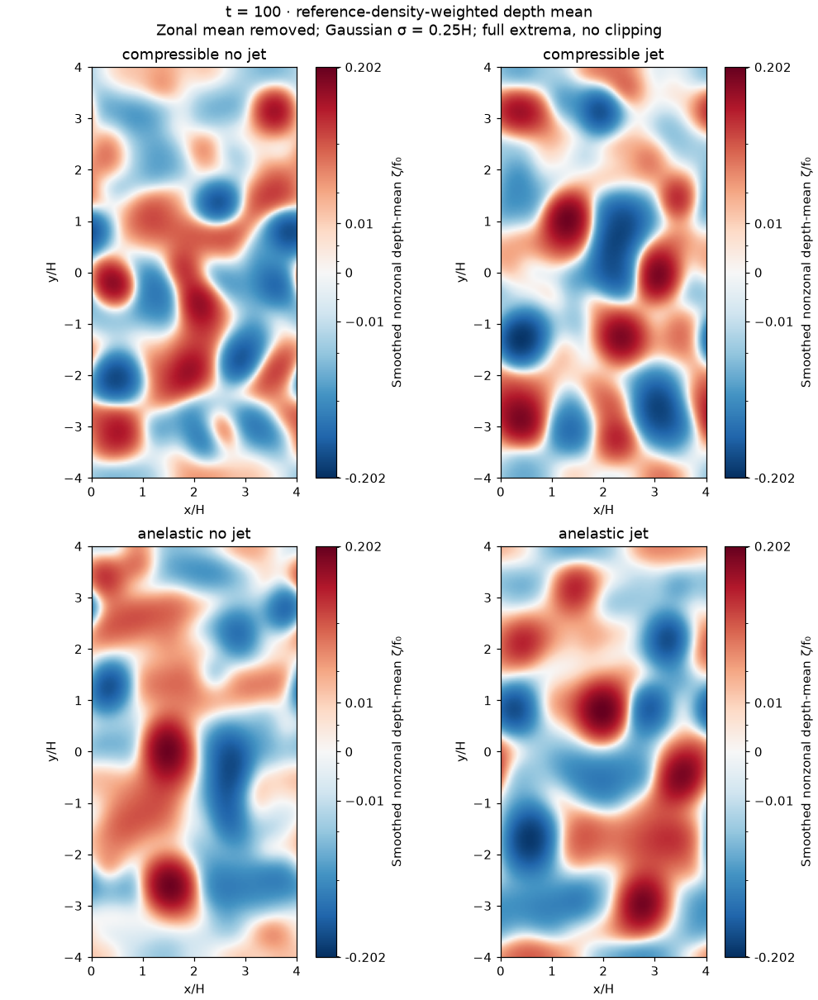

Update: all four runs have completed t = 1000. Watch the full compressible and anelastic comparisons and analysis.
← Jupiter Flow GalleryAll four heated β-channel runs completed t = 100. These movies include the entire t = 0–100 history, continuing each case from its own t = 10 checkpoint. Time is nondimensional, not Earth days.
Top two rows: jet vorticity and tracer. Bottom two rows: no-jet vorticity and tracer. Three heights across every row.
Download compressible MP4The compressible startup Mach peaks subside without changing the physical configuration. At t = 100, maximum Mach outside the top-corner region is approximately 0.36 in both compressible cases. The full maxima remain 0.67 (no jet) and 0.53 (jet), so localized fast flow persists.
The final compressible fields contain large, vertically aligned vortices and filamentation, with both cyclones and anticyclones present. The cap-jet case retains several rounder vortices; the no-jet case is more elongated and zonally organized in this realization. Large mixed-sign eddies were present initially, so their survival and evolution must not be confused with spontaneous formation through an inverse cascade.
A preferred anticyclonic LSV is not established by t = 100. Both signs remain represented in the large-scale diagnostic. Removing the zonal mean is essential here: a strengthening jet must not be counted as a vortex.
| Case | Anticyclonic share, t = 75–100 | Nonzonal depth-mean KE at t = 100 |
|---|---|---|
| Compressible, no jet | 48.5% | 0.00589 |
| Compressible, jet | 49.8% | 0.00934 |
| Anelastic, no jet | 46.0% | 0.00839 |
| Anelastic, jet | 48.5% | 0.01058 |
Share refers to negative-vorticity enstrophy in the smoothed, nonzonal, reference-density-weighted depth mean, excluding |y| ≥ 3.5H. Gaussian smoothing σ = 0.25H; reflected y and periodic x boundaries. It is a defined spatial diagnostic, not a vortex count or an inverse-cascade flux. All cases start with nonzonal depth-mean KE 0.00924 and 50% negative share. KE is ½〈ū′² + v̄′²〉 in nondimensional units.

Common full-extrema color scale, with the zonal mean removed. Both vortex signs remain; this spatial diagnostic does not measure inverse energy flux.
Jet-forcing clarification: the target jet is confined to the cap (zero below z/H=0.82, ramping to full amplitude at 0.96), but its momentum relaxation acts on the zonal mean at every height, with τ=200. Below the cap it relaxes that mean toward zero. No-jet cases disable this relaxation entirely. Consequently this comparison changes both cap shear and deep mean-flow relaxation; differences cannot be attributed to cap shear alone. The implementation was not changed at restart.
128 × 256 × 80; domain 4H × 8H × H; Ω = 3 at 67.5°N; β = 0.0032116888521660312; periodic x, bounded y and z. Same mixed-sign initial eddies (RMS 0.136); bottom heat flux 0.03125; same cap, conduction and mean thermal restoration. WENO9 with no turbulence closure. Jet cases use the existing modest cap jet, peak parameter 0.015625. No physics or rotation-rate changes at restart.
Each movie has all 101 integer-time states, 8 frames/s, with no temporal interpolation. Vorticity is ζ/f₀; positive is cyclonic and negative anticyclonic in the Northern Hemisphere. Fixed per-depth vorticity limits cover all cases and times, with asinh width 0.01. Tracer contrast uses asinh((C−0.1)/0.005), range 0–1, with absolute-concentration ticks; fixed across every frame and depth. Panels are stretched for readability.
Run summary and diagnostics · Time-resolved large-scale metrics · Media checks and color scales · Simulation source
Unity simulation array 2181508; startup array 2177387; analysis/render job 2185170. Computation and rendering performed on Unity.